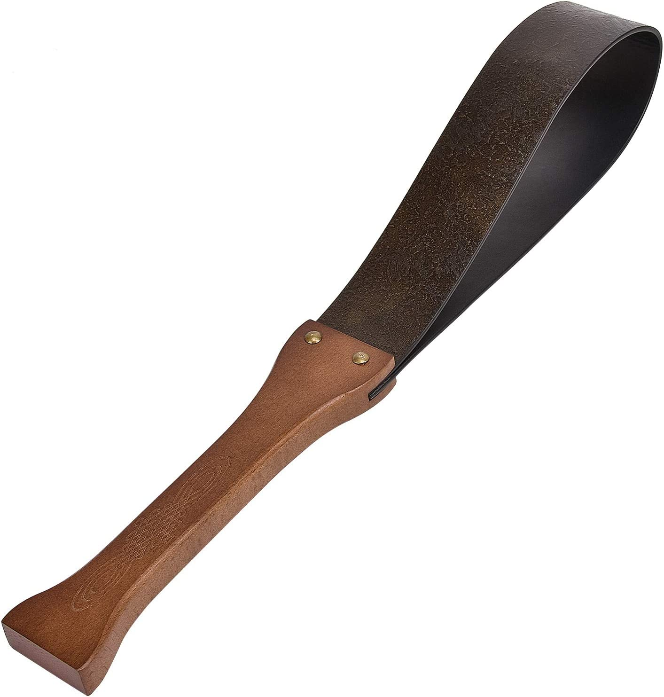
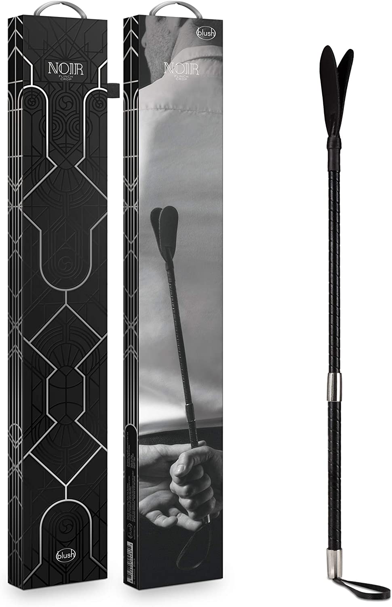

If you're interested in exploring BDSM, it's important to remember that it's a complex and multifaceted practice that requires communication, negotiation, and consent. There are also a wide variety of tools you'll need to get started. Don't worry, we've given a complete A to Z guide on BDSM, from what to do to what to buy(along with amazon links :) ) and how to use it:
1. Educate yourself: Before you dive into BDSM, it's important to familiarize yourself with the basics. This includes understanding the principles of consent, negotiation, and communication, as well as learning about different BDSM activities and the risks involved. There are plenty of resources available, such as books, articles, and online communities, that can help you learn more about BDSM.
2. Communicate with your partner: If you're interested in exploring BDSM with a partner, it's important to have an open and honest conversation about your desires and boundaries. This includes talking about your expectations, limits, and any hard limits (activities that are off-limits). It's also important to establish a safe word that can be used to halt the scene if necessary.
3. Negotiate boundaries and limits: Once you've had a conversation about your interests and boundaries, it's important to negotiate and establish clear boundaries and limits. This can help ensure that both parties feel comfortable and respected during the BDSM scene.
4. Start slowly It's important to take things slowly and build up gradually when you're first starting out with BDSM. This can help you get a feel for what you enjoy and what you're comfortable with. It's also a good idea to start with activities that are less intense or risky, such as light bondage or role-playing, before moving on to more advanced BDSM practices.
5. Use safe words and signals: A safe word is a pre-agreed upon word or phrase that can be used to stop the BDSM scene if necessary. It's important to establish a safe word with your partner and to respect it if it's used. In addition to a safe word, it's also a good idea to establish non-verbal signals, such as tapping a certain number of times, that can be used to communicate discomfort or the need to stop.
6. Restraining furniture Restraining furniture, such as swings or slings, can be used to position a partner in a particular way or to restrict their movement. We have added the amazon links for the best BDSM table and BDSM swing on the market for you :)
BDSM Master-Table
Sex-swing
7. Impact toys: Impact toys are used to deliver physical sensations, such as spanking, flogging, or paddling. These can include things like paddles, whips, or floggers.
Paddle-whip8. Sensation toys: Sensation toys are used to deliver sensory stimuli, such as tickling or pinching. These can include things like feathers, ticklers, or pinwheels
Crop-whip9. Bondage gear: Bondage gear is used to restrain or restrict a partner's movement. This can include things like handcuffs, rope, tape, or restraints.
Bondage-kit
10. Practice aftercare: Aftercare is the process of taking care of each other's physical and emotional needs after a BDSM scene. This can include things like cuddling, talking about the scene, or providing first aid if necessary. Aftercare is an important part of BDSM and can help ensure that both partners feel safe and supported.
11. Find a supportive community Exploring BDSM can be a rewarding and enjoyable experience, but it can also be intimidating or overwhelming at times. Finding a supportive community, whether online or in-person, can be a great way to connect with others who share similar interests and to get advice and support as you learn more about BDSM.
Remember, BDSM is about consensual, negotiated play between adults. It's important to communicate openly and honestly with your partner, respect each other's boundaries, and use safe practices to ensure that everyone involved is comfortable and safe. By following these steps, you can get started with BDSM in a positive and enjoyable way.